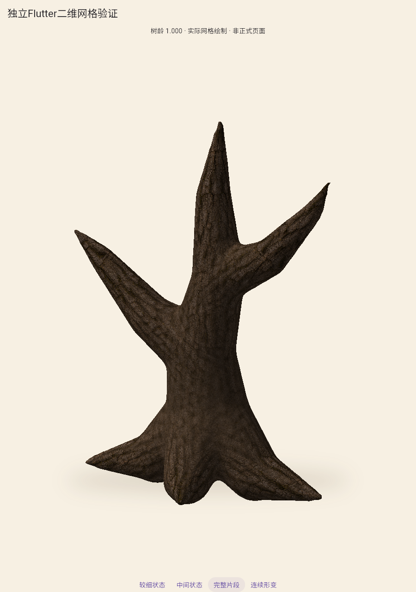
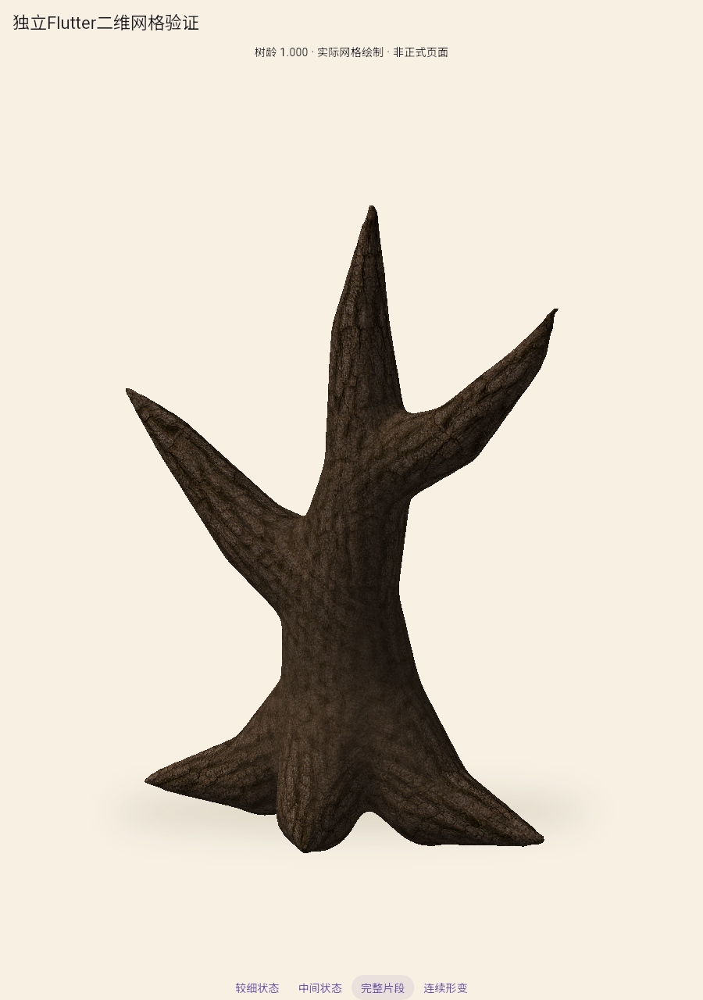
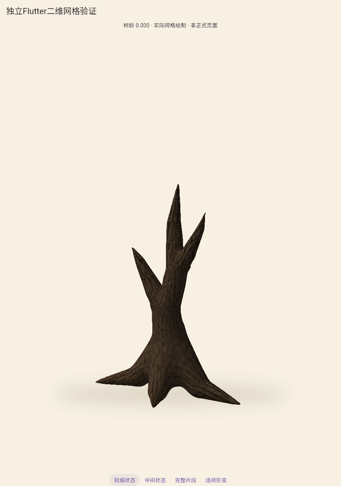
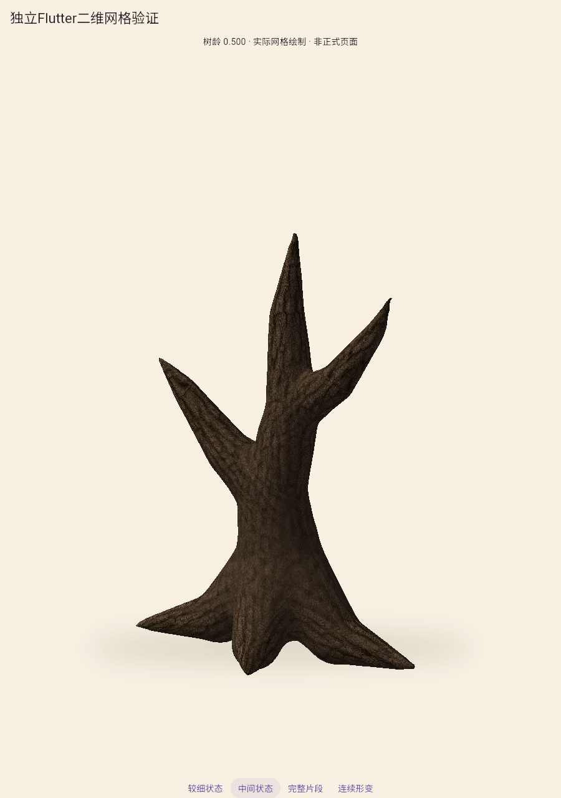
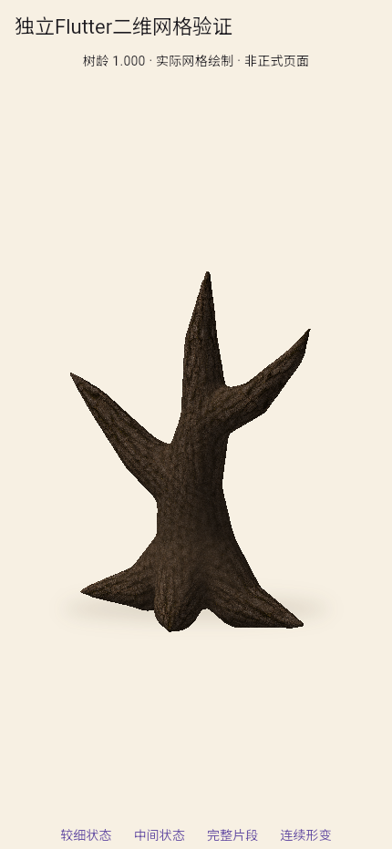

Flutter二维网格验证 · 技术链路有证据，整树视觉未通过
实际drawVertices绘制，不是播放离线图片。两个版本使用同一构建、相机、光照近似和连续绑定，仅资产精度不同。
简化后几何约0.93MB，几何计算与绘图记录CPU p95分别为4.2ms、5.6ms；不是GPU完成时间或真机60帧结论。二维材质仍偏暗，完整树冠、叶簇和枝牌尚未制作。
证据、复现和限制 · 完整资产结果 · 简化资产结果
完整资产 · 39810顶点
简化资产 · 5973顶点
较细状态 · 同一网格真实形变
中间状态
430手机视口 · 不是实体手机性能
离线同片段 · 明暗尚未对齐
简化资产全流程实际录像
含加载、三状态检查和窗口切换，末段为连续10秒形变。尚未接入正式应用。